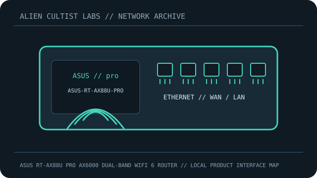

[ MODEL-SPECIFIC NETWORK HARDWARE RECORD ]
ASUS RT-AX88U Pro AX6000 Dual-Band WiFi 6 Router
Dual-band 802.11ax router with two 2.5GbE ports and AiMesh.

IDENTIFICATION: Confirm model, revision, regulatory region and label. Manufacturer link rates are maximum PHY/link specifications, not measured payload throughput; features depend on firmware and client capability.
Model-specific specifications and compatibility
| Subcategory | Network appliances: routers & access points |
|---|---|
| Exact product/model | ASUS RT-AX88U Pro AX6000 Dual-Band WiFi 6 Router |
| Ethernet ports and rates | Six RJ-45: two 2.5GbE ports (one WAN and one LAN) plus four 1GbE LAN; one USB 3.2 Gen 1. |
| Wi-Fi bands and standards | IEEE 802.11a/b/g/n/ac/ax dual-band: 2.4GHz 4x4 1148Mb/s; 5GHz 4x4 4804Mb/s. |
| Streams and nominal-rate interpretation | 8 streams; PHY maxima, not client throughput. |
| Antenna system | Four external non-detachable antennas. |
| Management, firmware and security update support | ASUSWRT web/app, AiMesh; WPA3/AiProtection Pro. Regional model firmware/support and security releases; verify exact label. |
| Power | 19V 2.37A (45W) adapter. |
| Compatibility | 2.5GbE requires matching peer/cable. 160MHz/WPA3 require compatible clients and lawful channels. |
| Revision / variant | Exact RT-AX88U Pro; public ASUS page does not specify a separate hardware revision. Verify label/region; not RT-AX88U or RT-AX86U Pro. |
Revision, management and deployment notes
Revision/variant: Exact RT-AX88U Pro; public ASUS page does not specify a separate hardware revision. Verify label/region; not RT-AX88U or RT-AX86U Pro.
Firmware/security updates: ASUSWRT web/app, AiMesh; WPA3/AiProtection Pro. Regional model firmware/support and security releases; verify exact label.
Power: 19V 2.37A (45W) adapter.
Compatibility: 2.5GbE requires matching peer/cable. 160MHz/WPA3 require compatible clients and lawful channels.
No throughput or range benchmark is claimed. For testing, record firmware, client, channel, topology and method.
Safety and preservation
Retain adapter/PoE labels and regional SKU, record firmware provenance, and remove power before servicing. Do not publish credentials, serial numbers, MAC addresses or private network details.
Manufacturer sources and manuals
- ASUS product specificationsManufacturer product information for the exact product family/model.
- ASUS official manuals/support/firmwareOfficial manufacturer support, manual and firmware resources.
Use exact model/revision and purchase-region documentation for firmware and regulatory decisions.